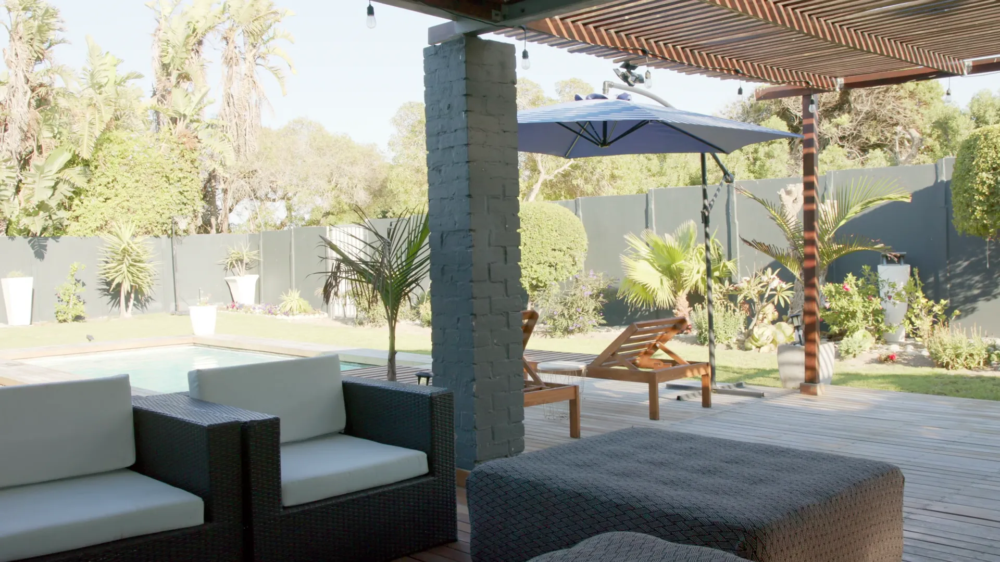

A Layout for Your Space
We map where people sit and gather, and aim the mist there first.
At Big Easy Lawn Care, we provide misting and cooling systems for homes and businesses across the greater New Orleans area. Every system is planned around the patio, porch, or pergola it serves and our long, humid summers.
Our misting system installation in New Orleans covers a free on-site estimate and a layout matched to your seating, shade, and breeze. We agree on where the mist should reach, install the system on a clear schedule, and close with a final walkthrough so you know how it runs.
We map where people sit and gather, and aim the mist there first.
Mist works best alongside cover, so we look at the roof, pergola, or trees above the area.
We plan the reach so the mist stays clear of doorways, cushions, and anything that should stay dry.
A fully insured professional handles the work, and our service is backed by a satisfaction guarantee.
At the final walkthrough we run the system with you and answer questions about daily use.
Manage your service from a phone or web browser and pay online.
We handle misting and cooling projects in New Orleans for covered patios and porches, for pergolas and decks, for homeowners who want a cooler backyard, and for businesses with outdoor seating. The setting decides the layout, and every project begins with a free, no-obligation estimate at the property.

A roof edge gives the system a natural run, with mist settling over the seating instead of the house.

Add cooling to a pergola or an outdoor deck, so shade and mist work on the same space.

Backyards and sitting areas for homeowners who want summer evenings outside.

Outdoor seating and shared spaces for businesses with guests in the heat.
A misting system works differently in New Orleans because mist cools as it evaporates, and damp air slows evaporation. The U.S. Geological Survey notes that evaporative coolers work best in the dry parts of the country, so here shade, moving air, and careful placement do much of the work.

A misting system on a New Orleans patio should sit where shade is already overhead, where air moves through, and close to the seats people actually use. Keeping the spray off doors, fabric, and electronics matters just as much, because in humid air extra water lingers instead of drying quickly.
Shade overhead
The frame gives the line a place to run, and its shade cools the space before the mist even starts.
The roof edge
Mist from the edge of a covered patio or porch hangs over the seating rather than drifting toward the house.
Breeze or fan
Moving air helps mist evaporate, which counts for more in humid weather. We note where the breeze comes through.
Keep it dry
Doorways, outdoor fabric, and electronics sit outside the spray, so the area cools without getting soaked.
USGS notes that evaporative cooling works best in dry air, so these placement notes lean on shade and airflow. We settle the final layout with you during the free on-site estimate.
Installing a misting system in New Orleans takes three steps. We visit for a free on-site estimate and give you a no-obligation quote with a clear schedule; a fully insured professional installs the system to the agreed layout; and a final walkthrough shows you how to run it day to day.
We walk the space with you, note shade, airflow, and water access, then quote.
The system goes in to the layout we agreed, with the reach set for your seating and kept off doors and fabric.
We run the mist with you and check every area it reaches, then you pay online and reserve more services there.

A misting system in New Orleans earns its keep from late spring through early fall. Test it in spring before the heat arrives, run it when the space is in use during summer, ease off as fall cools down, and protect exposed water lines on the rare nights that freeze in winter.
Turn it on and watch for uneven spray or drips.
Switch it on when people are outside and off when the patio sits empty.
Cooler afternoons need less mist, so run it less often.
Treat exposed water lines like any outdoor pipe when a freeze is in the forecast.

Cost depends on the area the mist needs to cover, where the system mounts, and access to water. We quote after a free, no-obligation visit.
Get Free EstimatesTo prepare for a misting system in New Orleans, decide which part of the yard you want cooler and when you use it, whether that spot has shade overhead, and where the system can reach water. With those answers in hand, the estimate is accurate and the layout fits the way you live outside.
Pick the seating, dining, or play area that gets the most use on hot afternoons and evenings.
If the spot sits in full sun, a pergola or cover may do more than mist alone, and the two work well together.
Find the nearest outdoor faucet, and note what needs to stay dry.
Our customers mention the same things again and again: prompt, courteous crews, detailed cuts with a thorough cleanup afterward, fair pricing, and fast replies, including a callback within 24 hours on an overgrown lawn. Here is what a few of them shared with us.
The lawn care service I received from start to finish was great. The staff are always prompt and courteous, the prices can't be beat and my yard looks amazing, all thanks to Big Easy Lawn Care!
Big Easy Lawn Care is great! I called them up to take care of an overgrown lawn, and they were able to get back with me within 24 hours. Their pricing was very reasonable as well. We'll be using this company from now on for our lawn care needs.
The guys at Big Easy Lawn Care did an excellent job. They did a very detailed cut and cleaned up thoroughly after. I am so happy with the results! My lawn looks better than ever before, thanks to them!
A misting system in New Orleans goes well with the rest of our outdoor living work: a pergola or deck to give the mist shade and a place to mount, an outdoor kitchen or bar where guests gather, and a pond for the sound of water. Each one starts with a free estimate.
A misting system is a line of small nozzles that sprays water as a very fine mist over an outdoor space. As the droplets evaporate, they draw heat from the surrounding air, so the area feels cooler. Most are mounted along a patio cover, porch edge, or pergola, close to where people sit.
Yes, misting systems cool the air through evaporation, but how much they help depends on the weather and the setup. They work best in dry air, so in New Orleans they do most when paired with shade overhead, a breeze or fan, and a layout aimed at the seats people actually use.
They work, but with less effect than in dry climates, because damp air slows evaporation. Evaporative coolers do their best work in dry regions, according to the U.S. Geological Survey, so in humid New Orleans we plan for shade, airflow, and placement before we install.
Water use depends on how many nozzles the system has, the size of each nozzle, and how long it runs each day. A small patio setup run only while people are outside uses far less than a large system left on all afternoon, so switching it off when the space is empty saves the most water.
It depends on the type of system. Some misting setups run on the pressure of an outdoor faucet, while others add a pump to push water through finer nozzles for a lighter mist. Which one fits depends on the space, how often you use it, and your budget, and we cover that at the estimate.
Installing a misting system starts with choosing where the mist should reach, then running the line and nozzles along a patio cover, porch edge, or pergola above that spot. The line connects to a water source, and the spray is tested so it stays off doors and furniture. We handle each step for you.
Choose a misting system by starting with the space: how large it is, whether it has shade overhead, where the breeze comes from, and where water is available. Then think about how often you will use it. In New Orleans humidity, a system matched to a shaded, airy spot gives the most comfort.
A mosquito misting system sprays insecticide, not just water. The EPA describes them as systems that spray pesticides in a fine mist, with nozzles connected by tubing to a supply of insecticide, and says their effectiveness has not yet been studied enough to document. Cooling misting systems spray water for comfort instead.
Join our satisfied and happy customers. Get your free lawn care assessment today.